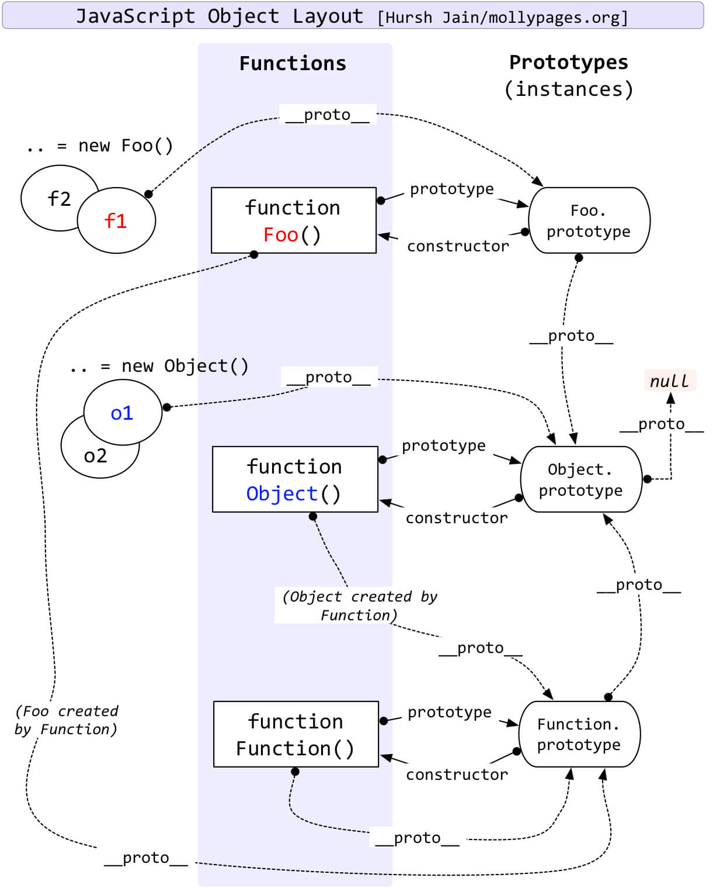
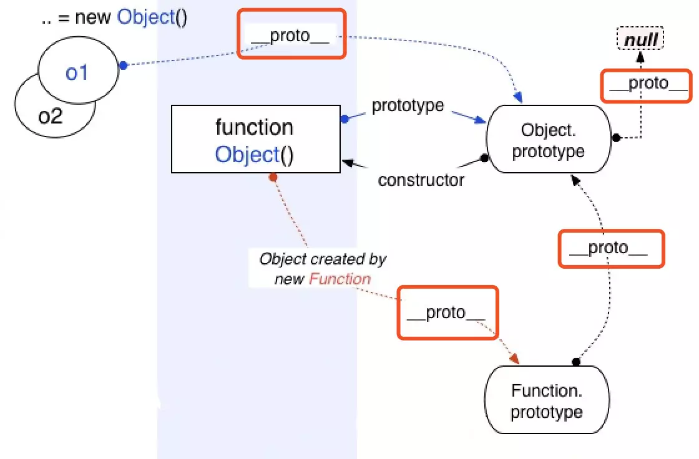
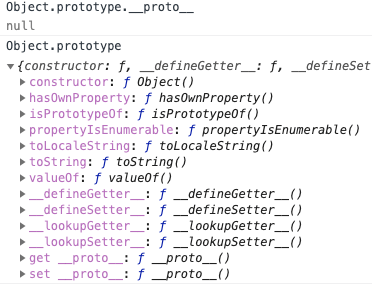
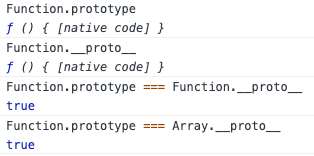

简介

基本上都知道原型链的尽头指向null，那么Function.prototype、Object.prototype、null、Function.prototype.__proto__、Object.prototype.__proto__、function、object之间的关系是什么，下面慢慢来记录一下。
Object
Object 构造函数创建一个对象包装器。JavaScript中的所有对象都来自 Object；所有对象从Object.prototype继承方法和属性，尽管它们可能被覆盖。
Object 作为构造函数时，其 [[Prototype]] 内部属性值指向 Function.prototype
1 | Object.__proto__ === Function.prototype; // true |

Object.prototype
Object.prototype 表示 Object 的原型对象，其 [[Prototype]] 属性是 null，访问器属性 __proto__ 暴露了一个对象的内部 [[Prototype]] 。Object.prototype是浏览器底层根据 ECMAScript 规范创造的一个对象。
object
通过字面量实例化一个object，它的__proto__指向Object.prototype。
1 | var obj = {}; |
而通过new Object实例化一个object，它的__proto__指向Object.prototype。
1 | var obj = new Object(); |
Function
对象类型的成员，标准内置构造器 Function 的一个实例，并且可做为子程序被调用。
注： 函数除了拥有命名的属性，还包含可执行代码、状态，用来确定被调用时的行为。函数的代码不限于 ECMAScript。
Function 构造函数创建一个新的Function对象。在JavaScript中每个函数实际上都是一个Function对象。
Function.prototype
全局的Function对象没有自己的属性和方法, 但是因为它本身也是函数，所以它也会通过原型链从Function.prototype上继承部分属性和方法。Function.prototype也是一个“函数对象“，其[[prototype]]内部属性值指向Object.prototype。
Function.prototype 的 [[Class]] 属性是 Function，所以这是一个函数，但又不大一样。
1 | Function.prototype; // ƒ () { [native code] } |
用 Function.prototype.bind 创建的函数对象没有 prototype 属性。
1 | let foo = Function.prototype.bind(); |
Function.prototype 是引擎创建出来的函数，引擎认为不需要给这个函数对象添加 prototype 属性，不然 Function.prototype.prototype… 将无休无止并且没有存在的意义。
Function.prototype.__proto__指向Object.prototype。
1 | Function.prototype.__proto__ === Object.prototype; // true |
Function.proto
Function 构造函数是一个函数对象，其 [[Class]] 属性是 Function。Function 的 [[Prototype]] 属性指向了 Function.prototype，即
1 | Function.__proto__ === Function.prototype; // true |

function
实例化一个Function，它的__proto__指向Function.prototype。
1 | function foo() {} |
Object 和 Function 的鸡和蛋的问题
经过上面对Object和Function的阐述，延伸出来几个问题如下：
在忽滤
null在原型链上时，原型链的尽头（root）是Object.prototype。所有对象均从Object.prototype继承属性。
Function.prototype和Function.__proto__为同一对象。

这意味着：Object/Array/String等等构造函数本质上和Function一样，均继承于Function.prototype。Function.prototype直接继承 root（Object.prototype）。
1 | // Function.prototype继承了Object.prototype |
通过上面代码知道继承的原型链大致是： Object.prototype(root)<—Function.prototype<—Function|Object|Array…。
上面的会出现一个比较奇特的现象如下：
- 第一问
1 | Function.__proto__ === Function.prototype; |
Function对象是不是由Function构造函数创建的实例？
- 第二问
1 | Function instanceof Object; // true |
为什么Function instanceof Object为true，Object instanceof Function也为true，那么他们到底是什么关系？
解答
先要了解清楚Function.prototype和Object构造函数如下：
回归规范，摘录 2 点：
Function.prototype是个不同于一般函数（对象）的函数（对象）。
The Function prototype object is itself a Function object (its [[Class]] is “Function”) that, when invoked, accepts any arguments and returns undefined.
The value of the [[Prototype]] internal property of the Function prototype object is the standard built-in Object prototype object (15.2.4). The initial value of the [[Extensible]] internal property of the Function prototype object is true.
The Function prototype object does not have a valueOf property of its own; however, it inherits the valueOf property from the Object prototype Object.
上面的可以总结为：
Function.prototype像普通函数一样可以调用，但总是返回undefined。- 普通函数实际上是
Function的实例，即普通函数继承于Function.prototype。func.__proto__ === Function.prototype。 Function.prototype继承于Object.prototype，并且没有prototype这个属性。func.prototype是普通对象，Function.prototype.prototype是null。所以，
Function.prototype其实是个另类的函数，可以独立于/先于 Function 产生。Object本身是个（构造）函数，是Function的实例，即Object.__proto__就是Function.prototype。
The value of the [[Prototype]] internal property of the Object constructor is the standard built-in Function prototype object.
The value of the [[Prototype]] internal property of the Object prototype object is null, the value of the [[Class]] internal property is “Object”, and the initial value of the [[Extensible]] internal property is true.
第一问
Function对象是由Function构造函数创建的一个实例？
Yes 的部分：
按照 JavaScript 中“实例”的定义，a 是 b的实例即 a instanceof b 为 true，默认判断条件就是 b.prototype 在 a 的原型链上。而 Function instanceof Function 为 true，本质上即 Object.getPrototypeOf(Function) === Function.prototype，正符合此定义。
No 的部分：Function 是 built-in 的对象，也就是并不存在“Function对象由Function构造函数创建”这样显然会造成鸡生蛋蛋生鸡的问题。实际上，当你直接写一个函数时（如 function f() {} 或 x => x），也不存在调用 Function 构造器，只有在显式调用 Function 构造器时（如 new Function('x', 'return x') ）才有。
个人偏向先有的Function.prototype，再有的function Function，所有构造函数本质上都是集成于Function.prototype
，所以Function.__proto__ === Function.prototype。
第二问
1 | // Function.__proto__、Function.prototype指向同一个对象，Function.prototype.__proto__指向Object.prototype |
总结一下：先有 Object.prototype（原型链顶端），Function.prototype 继承 Object.prototype 而产生，最后，Function 和 Object 和其它构造函数继承 Function.prototype 而产生。
总结
Object.prototype是浏览器底层根据ECMAScript规范创造的一个对象。Function.prototype直接继承的Object.prototype，同样它也是由是引擎创建出来的函数，引擎认为不需要给这个函数对象添加prototype属性。Function.prototype.prototype为undefined。- 先有
Object.prototype（原型链顶端），Function.prototype继承Object.prototype而产生，最后，Function和Object和其它构造函数继承Function.prototype而产生。
参考
MDN Object.prototype
MDN Function.prototype
从proto和 prototype 来深入理解 JS 对象和原型链
从探究 Function.proto===Function.prototype 过程中的一些收获
【进阶 5-3 期】深入探究 Function & Object 鸡蛋问题